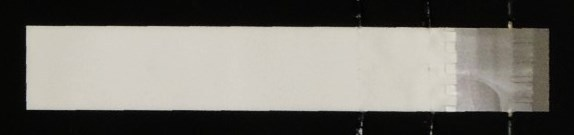
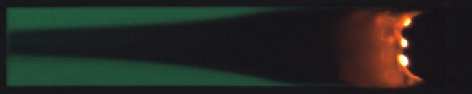

Cygnus spacecraft · Saffire-II · Sample 2-7
The 140-second fire
A strip of acrylic touched a strip of flame-resistant fabric. NASA recorded a burn lasting 140 seconds. Which material actually caught fire?

The flight record
One row, two materials
Read these columns as they appeared together in the experimental table.
- Sample
- 2-7
- Material
- PMMA & Nomex
- Burn Time (s)
- 140 s
See the photograph and the component measurements

5 cm of acrylic consumed
The upstream acrylic, also called PMMA, burned away. NASA recorded the 140 seconds for the combined specimen.
0 cm of Nomex burned
The first centimetre of fabric showed significant damage. Five centimetres blackened. The investigators found no ignition of the fabric and identified soot from the acrylic as one possible cause of discoloration.
Original PSI table, row 8 and note 2 · Flight report, Table I
Your interpretation
Which caption would you publish?
To test this fabric for a rover, match its grade, seam and adjacent heat source, set the proposed oxygen and pressure, and measure whether the flame keeps spreading when the heat source ends.
Peer review
Give another reader a caption to check
Write your caption in your own language. Include the source cell or page that settled the question. Another reader can open your file, agree or dispute the interpretation, and send back a reviewed copy.